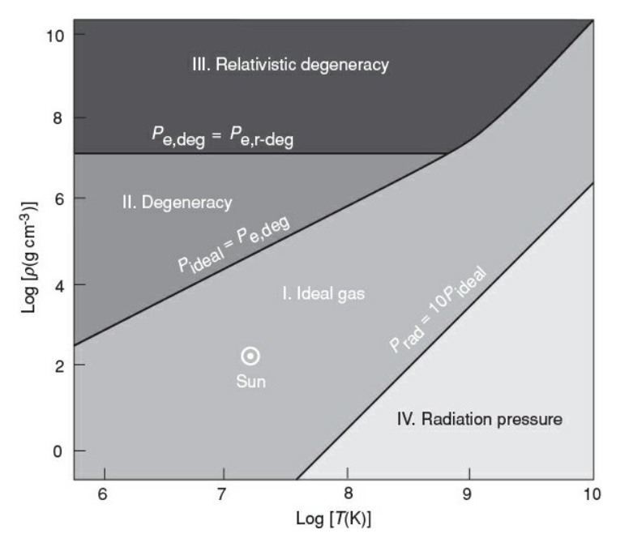
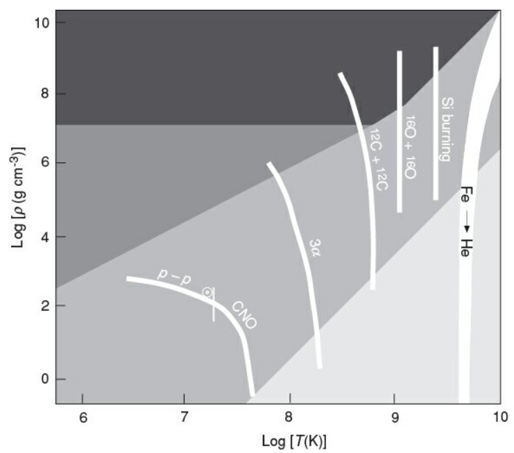
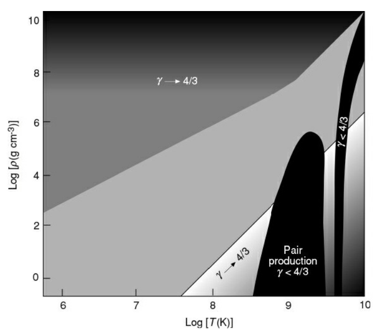
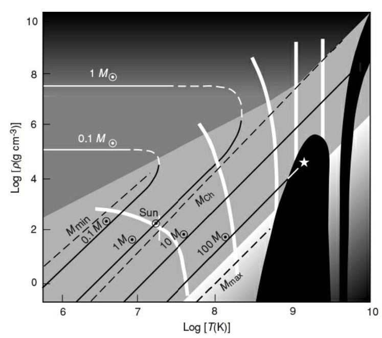
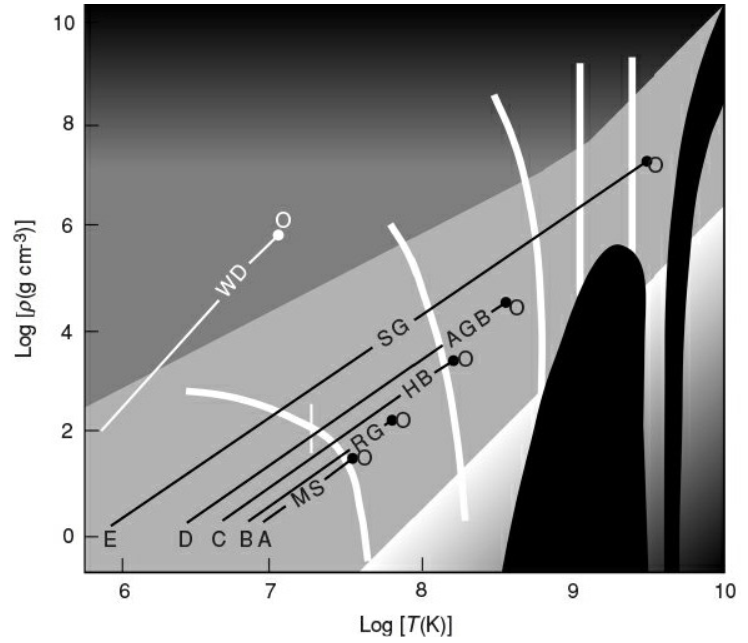

恒星的几个时标：
恒星的演化时标为核反应时标，在长时标下可能发生多次热演化的随机涨落，但会被统计抹平。中心核区，或中心点源$(T_c,\rho_c)$的演化将主导恒星的状态。这一章研究中心点$(\log T_c,\log \rho_c)$的演化轨迹。
$(\log T,\log \rho)$平面的特征
EoS区域

不同EoS在$(\log T,\log \rho)$平面上划分出下面四个区域
- (I)理想气体：$P=\frac{\mathcal{R}}{\mu}\rho T=k_0\rho T$
- (II)简并电子气：$P_\mathrm{e,deg}=k_1\rho^{5/3}$
- (III)相对论性简并电子气：$P_\mathrm{e,r-deg}=k_2\rho^{4/3}$
- (IV)辐射压主导，$P\approx P_\mathrm{rad}=\frac{1}{3}aT^4$。
区域间的分界线：
- 在(I)和(II)相变的临界点，$P_\mathrm{ideal}\approx P_\mathrm{e,deg}$，从而有
- (II)和(III)相变的临界点$P_\mathrm{e,deg}\approx P_\mathrm{e,r-deg}$，
- 若自引力收缩快，(I)区可直接进入(III)区，$P_\mathrm{ideal}\approx P_\mathrm{e,r-deg}$，
- (I)到(IV)的相变，不妨假设$P_\mathrm{rad}\approx 10P_\mathrm{gas}$。有
核燃烧区域
一般只考虑$q>q_\mathrm{min}=0.1\mathrm{J\cdot kg^{-1}\cdot s^{-1}}$的核过程（更小的核过程的光度过小，不会被观测到）
在可以被观测到的临界点上：
即
给出$(\log T,\log \rho)$平面上一条负斜率的直线。
一般$m=1,n\gg 1$。在较大的温度范围上，$n$不是常数，而是$T$的函数，此时(*)式描述的是一条曲线。当恒星核区参数在边界曲线上方时，该反应才能被触发。
实际上边界线对应的$\rho$有一定弥散，从而有一定宽度。实际的各核反应的边界带如下图：

不稳定性区域
$\gamma_a>4/3$导致动力学不稳定，由各区域的EoS:
- 简并电子气区，$\gamma_a\rightarrow 4/3$
- 辐射压主导区，$\gamma_a\rightarrow 4/3$
- 铁核光致解离，$\gamma_a< 4/3$
- 正负电子对产生，$\gamma_a< 4/3$
简并气体和相对论性气体是热不稳定的。
如下图：

中心点的演化
多方球模型给出
设中心点初始处于理想气体区，$P_c=\frac{\mathcal{R}}{\mu}\rho_c T_c=k_0\rho_c T_c$。联立两式，有
- $B_n$对不同的$n$变化很小，可以看做常量。对$M=\mathrm{const}$给定的情况，此时有中心点$(\log\rho_c.\log T_c)$沿斜率为$3$的轨迹演化。演化过程中温度逐渐升高，向右上移动。
- 对不同的$M$，$M$增大导致$\rho_c$减小，即大质量恒星的演化轨迹是将小质量恒星的轨迹向下平移的得到。
- 如图，中心点处于I区要求质量范围约为$0.1M_\odot\sim 100M_\odot$

若随着恒星的演化，中心点进入II区（非相对论性简并电子气），$P_c=k_1\rho_c^{5/3}$，此时
- 对固定的$M$，$\log\rho_c=\mathrm{const}$，中心点的演化轨迹是一条水平的直线。由于核燃料基本耗尽，温度随着辐射冷却不断降低，从而演化方向是水平向左移动。
- 对更大的$M$，$\rho_c$更大，演化轨迹线是向上平移的。
- I区演化到II区的过渡过程是平滑的，这一阶段发生的是量子相变。
对$M\sim 0.1M_\odot$的矮星，将结束后将稳定在II区。
对$M\gtrsim M_\odot$，拐折后的轨迹最终进入III区。
对$M\rightarrow M_\mathrm{ch}$，恒星将沿I区和III区的边界线（在I区和III区这条线都是等质量线）不断收缩（$\rho_c\rightarrow\infty$），直到进入中子简并态。
恒星演化：中心值
初态$(T_c,\rho_c)$较低，位于I区。

如图，小质量恒星的核反应为p-p链主导，大质量恒星的核反应为CNO循环主导。
恒星质量的下限$M_\mathrm{min}\sim 0.08M_\odot$，更小的质量无法点燃核反应，质量在下限附近的恒星称为褐矮星；上限$M_\mathrm{max}\sim 100M_\odot$，此时光度达到爱丁顿极限，恒星处于辐射压主导的IV区，系统不稳定，寿命短，称为蓝巨星。
$M_\odot < M <50M_\odot$的恒星可以穿越多个核燃烧曲线，发生多个核反应，形成铁核+外围多壳层燃烧的洋葱结构。
小结：
- 对$M\le M_\odot$，中心点初始在I区，向上演化并拐折进入II区或III区，形成白矮星
- 对$M\ge M_\mathrm{ch}$，沿斜率为$3$的直线不断收缩，最终形成中子星
- 对$M>(8-10)M_\odot$，可能最终形成黑洞
主序理论
赫罗图上主序带：
（有一定弥散）
系数$\alpha$不是常数，$L$变大时$|\alpha|$变大。
另外，主序星有质光关系：
本节用已有的理论解释这两个经验关系。
假设：
- 中心核区为氢燃烧
- 系统处于热平衡和流体静力学平衡
- 化学丰度均匀、恒定
- 辐射平衡
- 气体压主导
- 不透明度$\kappa\sim\mathrm{const}$
对恒星结构方程组进行量纲分析：
定义分数质量$x=m/M$，$0\le x \le 1$。选择特征尺度$R_*$，可以有：
其中$f_1(x)$也是无量纲的。对压强、密度、温度、辐射通量也可以如下定义。
从而得到无量纲化的方程：
流体静力学平衡方程成为
类似地，连续性方程成为
理想气体的EoS $P=\frac{\mathcal{R}}{\mu}\rho T$成为
辐射转移方程成为
热平衡方程成为
无量纲化的方程对所有恒星都有相同的形式，这种性质称为同系性/同调性。
联立量纲方程(1)(2)(3)(4)，
即有
得到质光关系。
再联系(2)(4)(5)，得到质量-半径关系
以及
一般核反应都有$n>3$，从而$\rho_*$和$M$是负相关的。（可以在之前的$(\log\rho,\log T)$图中看出）
由光度$L\sim 4\pi R_*^2 \sigma T_\mathrm{eff}^4$，联立质量-半径关系有
对$M\le M_\odot$的恒星，p-p链主导，$n=4$，
对$M>M_\odot$的恒星，CNO循环主导，$n=16$，
得到和上面主序带相同的结果，质量越大（光度越大）$\log T_\mathrm{eff}$的系数越大。
演化时标
即更大质量恒星在主序上停留时间更短，演化更快。
中心温度
对$M\le M_\odot$的恒星，p-p链主导，$n=4$，$T_c\sim M^{4/7}$。要求$T_c\ge T_\mathrm{min}$，估算得到最小值量$M_\mathrm{min}\sim 0.1M_\odot,L_\mathrm{min}\sim 10^{-3}L_\odot$。
如果考虑$\kappa$不是常数，Kramers不透明度$\kappa=\kappa_0 \rho T^{-7/2}$。此时$L\sim M^{\frac{5+31/2n}{1+5/2n}}$。对p-p链主导的小质量恒星，$L\sim M^{5.46}$，与观测$L\sim M^{4.5}$基本一致。
对大量恒星样本的观测，由于形成时间不同，$\mu$也不同，因此在赫罗图上有一定的弥散。
演化后期恒星的结构
用$(\log T,\log\rho)$平面上一系列点描述恒星内部不同壳层的温度和密度，中心点应是曲线右上端点而表面是左下端点（温度最低，密度$\rightarrow0$）

对如图的恒星，
- 在主序阶段（曲线A），只有中心点O在核反应曲线上方，即只有核区能发生核燃烧。
- 演化到曲线B，核区氢燃料耗尽，发生自引力收缩，使中心点向右上方移动，但还未触发氦燃烧；而核区外围的中间壳层可以触发氢燃烧，此时恒星成为红巨星(Red Giant)。
若收缩过程为准静态过程，维里定理成立，且系统能量守恒，即引力势能和内能都守恒。为保持引力势能守恒，核区收缩时外壳应膨胀，为保持内能守恒，核区温度升高时外壳温度降低，即外壳绝热膨胀。
考虑距中心$r_0$处两个相等的质量元，$\Delta m_1=\Delta m_2=\Delta m$，$\Delta m_1$向内收缩$r_0\rightarrow r_1$，而$\Delta m_2$向外膨胀$r_0\rightarrow r_2$使引力势能不变：得到$r_2=(2-r_0/r_1)^{-1}r_0$。核区略微收缩可以导致外壳膨胀很多。
红巨星外壳的绝热膨胀导致$T_\mathrm{eff}$和$L$都降低，恒星将离开主序带。 - 若核区收缩使中心温度达到$3\alpha$反应的条件，核区的氦燃烧将被点燃（曲线C）。此时恒星核区的氦燃烧和外围的氢燃烧同时进行
- 大质量恒星经过多次引力收缩和加热，将形成多壳层燃烧的洋葱结构。
- 最后，核区重元素的燃烧也停止，将触发超新星爆炸，外围壳层被吹散到星际空间形成ISM，中心形成中子星或黑洞。